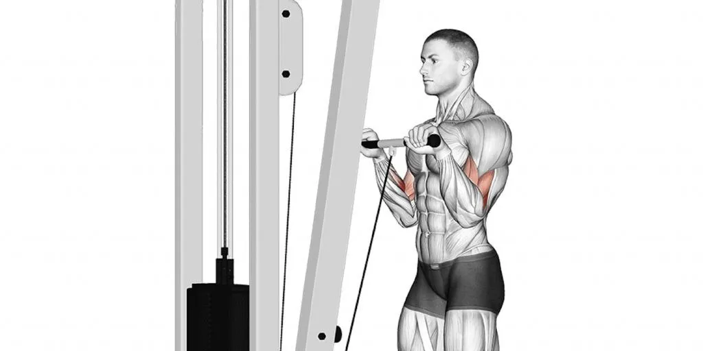
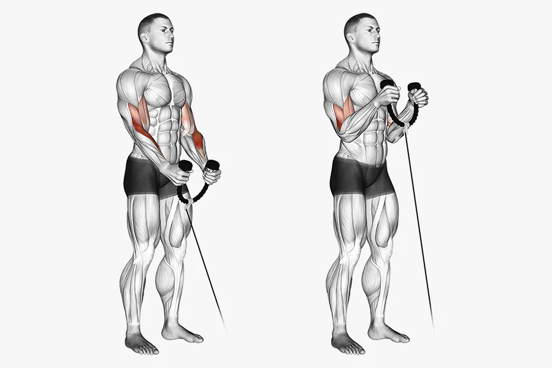
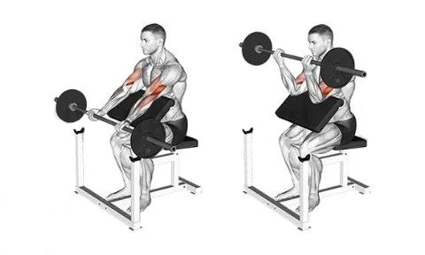

Reverse Grip Bicep curls
Step:1 Place the pulley on the lowest point possible if not already there
Step:2 Grab a straight bar attachment and attach it to the cable via carabiner
Step:3 Grab the straight bar with your palms facing the ground
Step:4 Pull the bar with your biceps while ensuring little to no movement on the elbow
Cable Bicep Curl
Step:1 Place the pulley on the lowest point possible if not already there
Step:2 Grab a rope attachment and attach it to the cable via carabiner
Step:3 Grab the rope with your palms facing each other
Step:4 Pull the rope to the sky while maintaining your elbows in a locked position
Step:5 Slowly return to the starting position to ensure
Preacher Curls
Step:1 Adjust seat height so that your triceps are fully on the pad
Step:2 Grab the easy curl bar in a position that feels comfortable
Step:3 Curl the bar to a 90 degree bend on your elbow
Step:4 Slowly and controlled bring the bar back to starting point